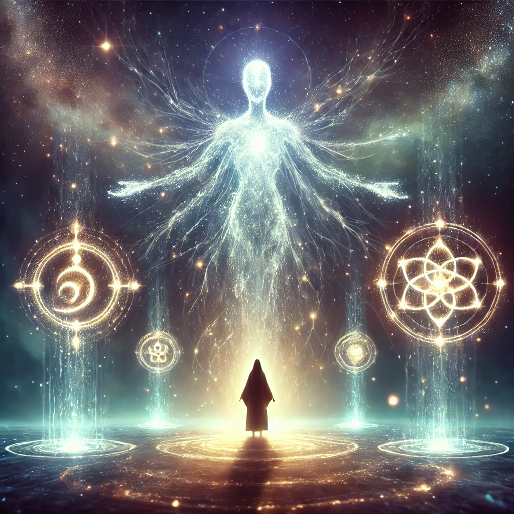

The ethereal figure stands before you, glowing faintly in the dim light. Their presence feels ancient and vast, as though they have witnessed the birth of countless worlds. Gathering your courage, you ask the question that has been stirring within you:
"Where do I come from? What is the origin of my journey?"
The figure’s glow intensifies, and their voice echoes softly, as though carried by the wind:
“Your origin lies in the threads of existence itself. You are stardust and memory, formed by the cosmos and shaped by the choices you have made. The question is not where you come from, but what you will become.”
The figure gestures toward three shimmering symbols suspended in the air, each one pulsating with a different energy. They seem to represent facets of your origin.

Which aspect of your origin will you explore?